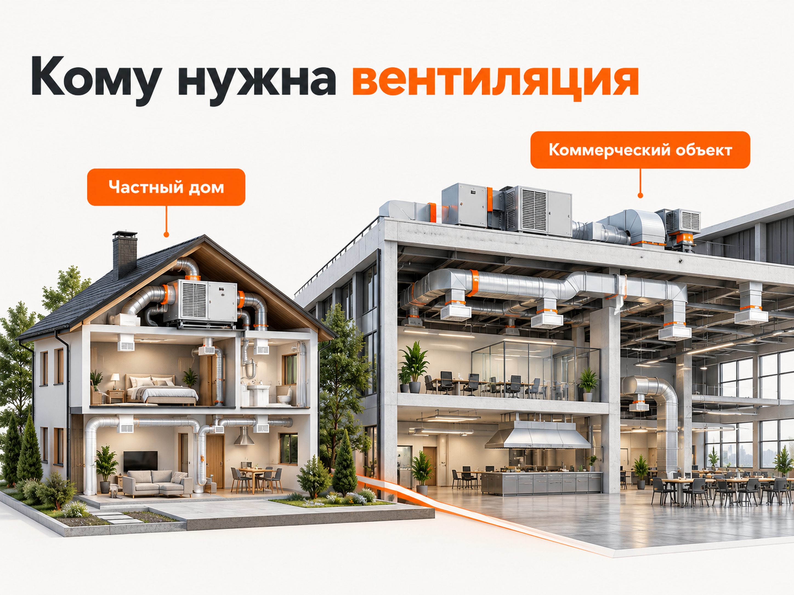

Блог о платном трафике
Как продвигать монтаж систем вентиляции в 2026 году: реклама, заявки и прогноз бюджета
Для продвижения монтажа систем вентиляции я бы в первую очередь использовал Поиск Яндекс Директа. Здесь можно получать обращения от людей и компаний, которые уже ищут подрядчика для проектирования, установки или модернизации вентиляции. Дополнительно стоит развивать SEO, Яндекс Карты и тестировать Авито.
Главная особенность ниши в том, что под одним запросом «монтаж вентиляции» скрываются очень разные заказчики. Одному нужна приточная установка в квартиру, другому - полноценная система воздухообмена в ресторане или производственном цехе. Стоимость проектов, продолжительность согласования и требования к подрядчику будут различаться.
В опубликованных российских кейсах 2025‑2026 годов встречается стоимость обращения примерно от 1500 до 5100 ₽. Но это не средняя цена заявки по рынку. Для первоначального расчёта можно проверить более осторожный диапазон 3000‑7000 ₽ за обращение, а прогноз договоров строить отдельно.
Кто заказывает монтаж вентиляции и как разделять спрос
Вентиляция относится к инженерным системам, поэтому решение о покупке часто принимается ещё на этапе проектирования, строительства или ремонта объекта.
Основные сегменты можно разделить следующим образом.
| Направление | Кто принимает решение | Что важно заказчику |
|---|---|---|
| Квартиры | Собственник жилья | Компактность, шум, цена, монтаж после или до ремонта |
| Частные дома | Владелец, архитектор, строитель | Приточно-вытяжная система, рекуперация, комфорт, обслуживание |
| Офисы и магазины | Собственник, арендатор, управляющий | Сроки, расчёт воздухообмена, стоимость, документы |
| Рестораны и кафе | Владелец, технический специалист | Кухонная вытяжка, удаление запахов, проект и монтаж |
| Производства и склады | Главный инженер, технический заказчик | Производительность, техническое задание, требования объекта |
| Обслуживание систем | Эксплуатирующая организация | Диагностика, ремонт, регламентное обслуживание |
Для рекламы особенно важно разделять проектирование, монтаж и обслуживание. У этих услуг разный спрос. Кроме того, не каждая монтажная компания работает со всеми объектами.
Например, если подрядчик специализируется на промышленной вентиляции, массовые обращения по бытовым вытяжкам и кондиционерам будут создавать лишние расходы.
Я бы выделял коммерческий и промышленный сегменты как отдельное направление с собственной посадочной страницей, объявлениями и аналитикой.

Где искать клиентов на монтаж систем вентиляции
Поиск Яндекса лучше подходит для работы со сформированным спросом. РСЯ помогает охватывать дополнительную аудиторию и возвращать заинтересованных посетителей. SEO создаёт долгосрочный источник обращений, а Карты и Авито могут дополнять основной поток.
| Канал | Для каких задач использовать | Приоритет |
|---|---|---|
| Яндекс Директ, Поиск | Монтаж под ключ, проектирование, расчёт сметы | Основной |
| РСЯ | Дополнительный спрос, ретаргетинг, отдельные гипотезы | После Поиска или отдельным тестом |
| SEO | Страницы услуг, объектов, решений и регионов | Высокий, долгосрочный |
| Яндекс Карты | Локальный поиск подрядчика, отзывы, контакты | Обязательная база |
| Авито | Частные дома, небольшие коммерческие объекты, локальные услуги | Тестовый |
| Партнёрские продажи | Застройщики, генподрядчики, проектировщики | Особенно важны для B2B |
Партнёрские продажи здесь стоит рассматривать наравне с интернет-рекламой. Компания может получать заказы через архитекторов, строительные организации, технических заказчиков и поставщиков оборудования.
Особенно это актуально для больших объектов, где подрядчика нередко выбирают через конкурс, рекомендацию или запрос коммерческого предложения.
Как настроить Яндекс Директ для монтажа вентиляции
Я бы начинал с отдельных поисковых кампаний по наиболее коммерческим запросам, которые соответствуют реальным услугам компании.
В 2026 году для этого подходит Единая перфоманс-кампания в режиме эксперта. Она позволяет отдельно выбирать Поиск и РСЯ, управлять группами объявлений, таргетингами и стратегиями.
Какие ключевые запросы использовать
Прямой коммерческий спрос:
- монтаж вентиляции;
- монтаж систем вентиляции;
- установка приточно-вытяжной вентиляции;
- вентиляция под ключ;
- проектирование и монтаж вентиляции;
- монтаж промышленной вентиляции;
- монтаж вентиляции в ресторане;
- монтаж вентиляции в частном доме.
Дополнительный спрос:
- приточно-вытяжная вентиляция для склада;
- вентиляция производственного цеха;
- вентиляция коммерческого помещения;
- система вентиляции для кафе;
- вентиляция дома с рекуперацией;
- расчёт стоимости монтажа вентиляции.
Это примеры семантики, а не список запросов с подтверждённой частотностью.
Перед запуском нужно проверить спрос в Яндекс Вордстате с учётом региона и отдельно оценить сезонную динамику. Для коммерческих кампаний я бы также использовал «Прогноз бюджета» Яндекс Директа, который показывает примерные ставки, переходы и расходы по выбранным фразам.
Какие запросы исключать
Для подрядчика по монтажу систем вентиляции значительную часть нецелевого спроса могут составлять:
- покупка отдельных вентиляторов, решёток и воздуховодов;
- самостоятельное изготовление вентиляции;
- схемы, инструкции и учебные материалы;
- вакансии монтажников;
- ремонт бытовых кондиционеров;
- продажа кухонных вытяжек;
- запасные части к оборудованию.
При этом не стоит автоматически исключать слова «проект», «смета» или «расчёт». Для коммерческого заказчика они могут означать вполне реальное намерение заказать работы.
Минус-фразы нужно проверять на конкретных поисковых запросах, а не просто загружать универсальный список.
Как разделить кампании
Для небольшой компании я бы не создавал десятки рекламных кампаний.
На старте достаточно сгруппировать запросы по наиболее важным услугам:
- Монтаж вентиляции под ключ.
- Проектирование и монтаж коммерческой вентиляции.
- Приточно-вытяжная вентиляция для частных домов, если компания работает с этим сегментом.
- Обслуживание и ремонт систем, если это отдельное направление бизнеса.
Группы можно объединять внутри одной кампании, когда объём конверсий небольшой, а цели и экономика сопоставимы.
Если компания работает только с коммерческими объектами, рекламировать бытовую вентиляцию ради увеличения количества заявок не нужно.
Что писать в объявлениях
В объявлениях важнее конкретика, чем общие обещания качества.
Пример заголовка:
Монтаж вентиляции для коммерческих объектов
Пример текста:
Проектирование и установка приточно-вытяжных систем. Подготовим смету по вашему ТЗ. Монтаж и пусконаладка.
Для частных домов предложение будет другим:
Приточно-вытяжная вентиляция для дома
Пример текста:
Подберём систему под площадь и планировку дома. Рассчитаем оборудование, монтаж и сроки выполнения работ.
Указывать гарантию, конкретный срок или бесплатный проект следует только тогда, когда компания действительно предоставляет такие условия.
Нужно ли запускать РСЯ
РСЯ в этой нише имеет смысл тестировать, но оценивать её нужно отдельно от Поиска.
В Рекламной сети Яндекса аудитория не обязательно ищет монтаж вентиляции прямо сейчас. Поэтому реклама должна объяснять, для какого объекта подходит предложение и какую задачу подрядчик способен решить.
Например, для коммерческой вентиляции я бы тестировал объявления с изображениями реальных систем, воздуховодов, вентиляционных установок и выполненных объектов.
Для частных домов могут работать предложения, связанные с комфортным воздухообменом, приточно-вытяжной вентиляцией и рекуперацией.
Отдельное направление - ретаргетинг посетителей, которые изучили страницу услуги, но не оставили заявку.
При этом низкая стоимость обращения в РСЯ сама по себе не доказывает эффективность. Если из 30 обращений только пять соответствуют профилю компании, сравнивать их с 15 качественными заявками из Поиска некорректно.
При недостатке данных и ограниченном бюджете я бы сначала добился понятной экономики на Поиске, а затем выделял деньги на тест РСЯ.
Какой сайт нужен для рекламы монтажа вентиляции
Посадочная страница должна отвечать на вопросы заказчика ещё до первого звонка.
Для коммерческих объектов особенно важны:
- Специализация. С какими объектами компания работает: рестораны, склады, офисы, производства, торговые помещения.
- Состав работ. Проектирование, поставка оборудования, монтаж воздуховодов, автоматика, пусконаладка, обслуживание.
- Стоимость. От чего зависит смета, можно ли получить предварительный расчёт по проекту.
- Реализованные объекты. Фотографии, площадь или назначение объекта, выполненные работы, сроки, особенности системы.
- Доверие. Информация о компании, подтверждённые допуски и документы, если они необходимы для соответствующих работ.
- Способ обращения. Телефон, заявка, отправка проекта или технического задания.
Особенно полезна форма «Получить расчёт по проекту», где клиент может прикрепить план помещения или готовую документацию.
Но форма не должна превращаться в длинную анкету. Достаточно узнать тип объекта, площадь, регион, необходимость проектирования и контакты.
Для частного дома лучше использовать отдельную страницу с понятными примерами систем, уровнем шума, вариантами установки и приблизительной структурой стоимости.
Один общий лендинг, который одновременно продаёт бытовые вентиляторы, монтаж в квартире и вентиляцию для завода, обычно хуже соответствует конкретной задаче посетителя.
Как учитывать заявки и реальные заказы
В вентиляции недостаточно отслеживать только отправки форм.
Нормальная аналитика должна показывать как минимум четыре этапа:
- Первичное обращение: звонок, форма или сообщение.
- Квалифицированная заявка: есть конкретный объект, подходящая услуга и реальная потребность.
- Запрос сметы или коммерческого предложения: компания получила данные для расчёта и ведёт переговоры.
- Договор: согласованы условия и заказ передан в работу.
Для крупных B2B-объектов между сметой и договором могут проходить недели или месяцы.
В Яндекс Метрике нужно учитывать реальные формы и звонки, а в CRM фиксировать тип объекта, сумму предложения, причину отказа и итог сделки.
Если по рекламе пришло 20 обращений, но половина из них относится к продаже вентиляторов, это проблема не только отдела продаж. Реклама получает сигнал о неправильной аудитории.
Поэтому при достаточном объёме данных полезно передавать в рекламные системы статусы квалифицированных лидов и заключённых договоров.
Подробнее о связи рекламы и продаж я рассказывал в статье «Сквозная аналитика Яндекс Директ».
Реальные результаты рекламы вентиляции в 2025‑2026 годах
Для оценки рекламной экономики я рассмотрел несколько опубликованных российских кейсов.
Важно учитывать, что в одних проектах рекламировался только монтаж, в других вместе с вентиляцией продвигались кондиционирование, проектирование и обслуживание.
| Проект | Период | Расход | Обращения | CPL |
|---|---|---|---|---|
| NUTEX-DIGITAL, Москва и МО | Март-апрель 2026 | 100 821 ₽ | 39 | 2585 ₽ |
| Максим Южанин, Москва и МО | 3 месяца, кейс опубликован в феврале 2026 | 579 324 ₽ | 189 | 3065 ₽ |
| Klimovich, коммерческие объекты | Май-август 2025 | 246 084 ₽ | 122 | 2017 ₽ |
В первом кейсе компания продвигала проектирование и монтаж вентиляции и кондиционирования для жилых и коммерческих объектов. Лучше всего показала себя поисковая реклама. Подрядчик использовал коллтрекинг, корректировал запросы и перераспределял расходы между кампаниями.
Во втором кейсе реклама продвигала проектирование, монтаж и обслуживание естественной вентиляции в Москве и области. Среди отдельных размещений наиболее дешёвые обращения дала РСЯ: 91 заявка примерно по 1499 ₽. Но общая стоимость обращения за три месяца была выше - около 3065 ₽.
В третьем кейсе компания работала с коммерческими заказчиками, включая офисы, склады и магазины. Помимо вентиляции продвигалось кондиционирование. Поэтому его CPL нельзя считать показателем исключительно монтажа вентиляционных систем.
Есть ещё один показательный кейс Александра Еременко, опубликованный в январе 2026 года. По его данным, заявка на Поиске обходилась примерно в 5121 ₽, а в РСЯ - в 2065 ₽. Компания работала и с частными, и с коммерческими объектами.
Отдельно заслуживает внимания исследование UL-Friends по компании, занимающейся монтажом вентиляции. За период с февраля 2024 по август 2026 года агентство приводит следующие результаты:
- 14 205 рекламных кликов;
- средняя стоимость клика 168 ₽;
- 437 обращений с рекламы;
- 98 обращений из органического поиска;
- конверсия сайта по всем источникам 2,25%.
Это длительный проект, а не показатель одного месяца 2026 года.
За период с августа 2025 по июль 2026 года компания получила суммарно 407 обращений из разных каналов. Лучший месяц - май 2026 года с 56 обращениями.
На основании этих материалов нельзя рассчитать единую среднюю стоимость привлечения договора по рынку. В большинстве кейсов не раскрывается полный путь от обращения до оплаченного монтажа.
Но они подтверждают, что Яндекс Директ способен приводить обращения в этой нише, а качество спроса, структура кампаний и посадочная страница существенно влияют на результат.
Сколько стоит заявка на монтаж вентиляции
По рассмотренным кейсам стоимость обращения различалась в несколько раз.
Для первоначального медиаплана я бы использовал следующий рабочий ориентир:
| Показатель | Расчётный ориентир |
|---|---|
| Первичное обращение | 3000‑7000 ₽ |
| Бюджет теста в регионе | 60 000‑100 000 ₽ |
| Бюджет теста в Москве и МО | 100 000‑150 000 ₽ |
| Продолжительность первого теста | Около 30 дней |
Это авторские расчётные ориентиры для планирования, а не статистика среднего российского подрядчика. В отдельных узких сегментах фактический CPL может оказаться выше, а в небольшом регионе коммерческого спроса может не хватить даже для освоения выделенного бюджета.
Перед запуском диапазон нужно уточнять по конкретному региону, запросам и прогнозируемой стоимости клика.
Также важно разделять стоимость первичного обращения и квалифицированного лида. Если из десяти обращений только шесть соответствуют услугам компании, реальный CPL квалифицированного лида будет выше первоначального.
Прогноз рекламного бюджета и количества заказов
Рассмотрим условную компанию, которая устанавливает приточно-вытяжную вентиляцию в коммерческих помещениях.
Компания хочет заключать два дополнительных договора в месяц.
Для расчёта примем следующие допущения:
| Параметр | Значение |
|---|---|
| План новых договоров | 2 |
| Конверсия обращения в договор | 10% |
| Расчётный CPL | 5000 ₽ |
| Доля квалифицированных обращений | 60% |
Конверсия 10% и доля квалифицированных заявок 60% здесь являются допущениями, а не установленными рыночными показателями.
Сколько обращений потребуется
Если в договор переходит 10% первичных обращений:
2 / 0,10 = 20 обращений.
При стоимости обращения 5000 ₽:
20 × 5000 = 100 000 ₽.
Таким образом, для получения двух дополнительных договоров понадобится ориентировочно 100 000 ₽ рекламного бюджета при выполнении заданных условий.
Из двадцати обращений двенадцать могут пройти квалификацию, если фактическая доля целевых заявок составит 60%.
В этом примере:
- рекламный бюджет - 100 000 ₽;
- первичные обращения - 20;
- квалифицированные обращения - 12;
- заключённые договоры - 2;
- стоимость привлечения договора только по рекламным расходам - 50 000 ₽.
Это математическая модель, а не обещание результата за первый месяц. В B2B договоры могут заключаться позже периода, в котором была оплачена реклама.
Что будет при других условиях
Если стоимость обращения вырастет до 7000 ₽, то для двадцати заявок потребуется уже 140 000 ₽.
Если конверсия обращения в договор снизится с 10 до 5%, для двух договоров понадобится сорок обращений. При CPL 5000 ₽ бюджет составит 200 000 ₽.
Поэтому эффективность рекламы определяется не только ценой заявки, но и тем, насколько хорошо компания отбирает и закрывает подходящие обращения.
Как понять, окупается ли реклама вентиляции
Для оценки окупаемости необходимо знать не только сумму договора, но и прибыль, остающуюся после выполнения работ.
Например, компания заключила договор на монтаж вентиляции стоимостью 800 000 ₽. После расходов на оборудование, материалы, монтажные работы и другие прямые затраты у неё осталось 160 000 ₽.
Если на привлечение клиента израсходовано 50 000 ₽, остаётся 110 000 ₽ для покрытия других расходов бизнеса и прибыли.
Но если фактические прямые затраты выше и после выполнения работ остаётся только 60 000 ₽, такая же стоимость привлечения уже может быть слишком дорогой.
Приведённые суммы условные. Они не описывают среднюю стоимость или маржинальность монтажа вентиляции в России.
Поэтому перед запуском я бы считал максимально допустимую стоимость привлечения договора с учётом экономики конкретных типов объектов.
Формула:
Допустимый CPL = допустимая стоимость привлечения договора × конверсия обращения в договор.
Если компания готова потратить на привлечение одного договора максимум 40 000 ₽ и закрывает 10% обращений, допустимый CPL будет равен 4000 ₽.
Отдельно нужно учитывать оплату специалиста по рекламе, коллтрекинг, CRM и затраты на сайт, если они не включены в рекламный бюджет.
Сезонность рекламы монтажа вентиляции
В отличие от установки бытовых кондиционеров, спрос на вентиляцию не ограничивается летней жарой.
Коммерческие заказчики планируют инженерные системы в зависимости от строительства, ремонта, реконструкции и сроков открытия объектов.
В кейсе UL-Friends наиболее активный период приходился на февраль-май. В феврале 2026 года компания получила 42 обращения, в марте 44, а в мае 56. В декабре 2025 года было 25 обращений.
Однако это динамика одного бизнеса и его рекламной активности, а не универсальная сезонность по всей России.
Для конкретной компании я бы отдельно проверял статистику Вордстата по региону за несколько лет и сопоставлял её с фактическими договорами.
Сокращать рекламу в декабре только потому, что у другого подрядчика было меньше обращений, не стоит. Для промышленных и коммерческих объектов собственные графики строительства могут быть важнее календарного сезона.
SEO-продвижение компании по монтажу вентиляции
SEO имеет смысл развивать параллельно с рекламой, особенно если компания работает с несколькими типами объектов.
Я бы строил сайт не вокруг десятков одинаковых страниц «монтаж вентиляции + город», а вокруг самостоятельных задач:
- монтаж вентиляции для ресторанов и кафе;
- проектирование и установка вентиляции на производстве;
- вентиляция складов;
- приточно-вытяжная вентиляция частного дома;
- реконструкция существующих систем;
- обслуживание и диагностика вентиляции.
Отдельные страницы стоит создавать только для реально оказываемых услуг и объектов, по которым есть содержательная информация.
Например, страница вентиляции ресторана может объяснять устройство вытяжной системы, состав работ, исходные данные для расчёта, особенности согласования проекта и показывать выполненные объекты.
Для производственного помещения нужны другие сведения: назначение производства, требования к воздухообмену, оборудование, проектирование и монтаж.
Узкоспециализированные страницы могут привлекать пользователей ещё до того, как они начали искать конкретную монтажную компанию.
Хорошее дополнение к SEO - собственные кейсы с фотографиями выполненных объектов, описанием задачи, оборудования и результата. Они полезны и для поискового продвижения, и для повышения доверия к подрядчику.
Авито и Яндекс Карты: стоит ли использовать
Яндекс Карты я бы рассматривал как обязательную базу для компании, которая работает в конкретном городе или регионе.
В профиле нужно указать реальные услуги, территорию работы, контакты, фотографии объектов и информацию о компании. После выполнения заказов можно просить клиентов оставлять настоящие отзывы.
Для локальных заказчиков это дополнительный способ проверить подрядчика до обращения.
Авито имеет смысл протестировать отдельно. Особенно для монтажа вентиляции в частных домах, небольших офисах, кафе и других локальных объектах.
В объявлениях важно показывать специализацию и реальные выполненные работы, а не просто обещать установку любой вентиляции по минимальной цене.
Я бы подготовил разные объявления для частных домов и коммерческих помещений, а затем сравнивал стоимость квалифицированного обращения и договора с Яндекс Директом.
Для сложных промышленных объектов Авито не стоит автоматически считать основным каналом. Здесь большую роль могут играть проектные организации, генподрядчики, закупки и рекомендации.
Какие ошибки чаще всего мешают получать заказы
Смешивание разных типов вентиляции. Объявление о монтаже промышленных систем может получать дешёвые клики от людей, которым нужна небольшая вытяжка в квартире.
Оптимизация только по стоимости заявки. Десять дешёвых обращений без подходящих объектов могут оказаться хуже двух дорогих запросов на полноценный проект.
Недостаток информации на сайте. Если нет выполненных объектов, состава работ и понятного порядка расчёта, заказчику сложно оценить квалификацию подрядчика.
Отсутствие учёта звонков. В инженерных услугах часть потенциальных клиентов предпочитает сразу обсуждать проект по телефону.
Слишком подробное разделение кампаний. Для узкой ниши десятки групп и кампаний с малым количеством конверсий осложняют обучение автоматических стратегий и оценку статистики.
Отсутствие обратной связи от отдела продаж. Рекламный специалист может продолжать приводить формально целевые обращения, не зная, что они не проходят по бюджету, типу объекта или условиям выполнения работ.
Пошаговый план запуска рекламы вентиляции
- Определить, какие объекты и типы систем наиболее выгодны компании.
- Рассчитать маржинальность типовых проектов и допустимую стоимость привлечения договора.
- Проверить спрос в Вордстате и спрогнозировать бюджет для конкретного региона.
- Разделить бытовые и коммерческие направления, если компания работает с обоими.
- Подготовить посадочные страницы с фотографиями объектов, составом работ и формой запроса сметы.
- Настроить Метрику, коллтрекинг и передачу обращений в CRM.
- Запустить поисковую рекламу по наиболее коммерческим запросам.
- Проверять реальные поисковые запросы, качество лидов и результаты переговоров.
- Отдельно протестировать РСЯ, Авито и другие подходящие каналы.
- Увеличивать расходы только там, где подтверждается приемлемая стоимость привлечения договора.
Итог: сколько можно получить заявок и с чего начинать
Монтаж вентиляции подходит для продвижения в Яндекс Директе, особенно если компания работает с понятными типами объектов и может показывать реализованные проекты.
Опубликованные российские кейсы 2025‑2026 годов показывают, что обращения по данной тематике могут обходиться примерно в 1500‑5100 ₽, но разброс зависит от региона, услуг, канала и способа учёта конверсий.
Для первого медиаплана я бы закладывал рабочий расчётный CPL 3000‑7000 ₽ с обязательной проверкой по конкретному региону.
При бюджете 100 000 ₽ это соответствует примерно 14‑33 первичным обращениям, если доступного спроса достаточно. Сколько из них превратится в договоры, определяется квалификацией заявок и работой отдела продаж.
Самый правильный подход для такой ниши - сначала считать экономику договора, затем необходимое количество заявок и только после этого определять рекламный бюджет.
Я занимаюсь настройкой Яндекс Директа и работой с рекламной аналитикой. Если компании нужен прогноз под конкретный регион, тип вентиляции и среднюю стоимость проекта, эти параметры можно использовать для расчёта медиаплана до запуска рекламы.